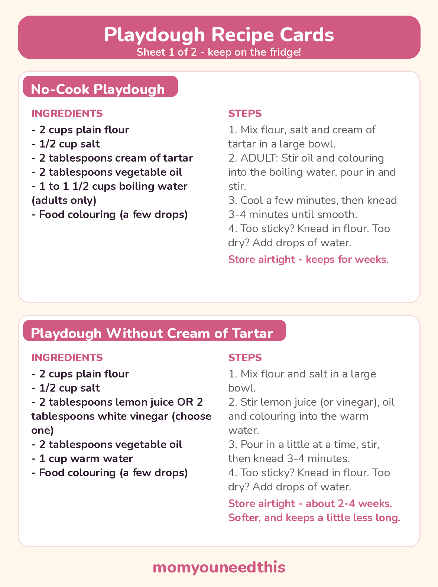
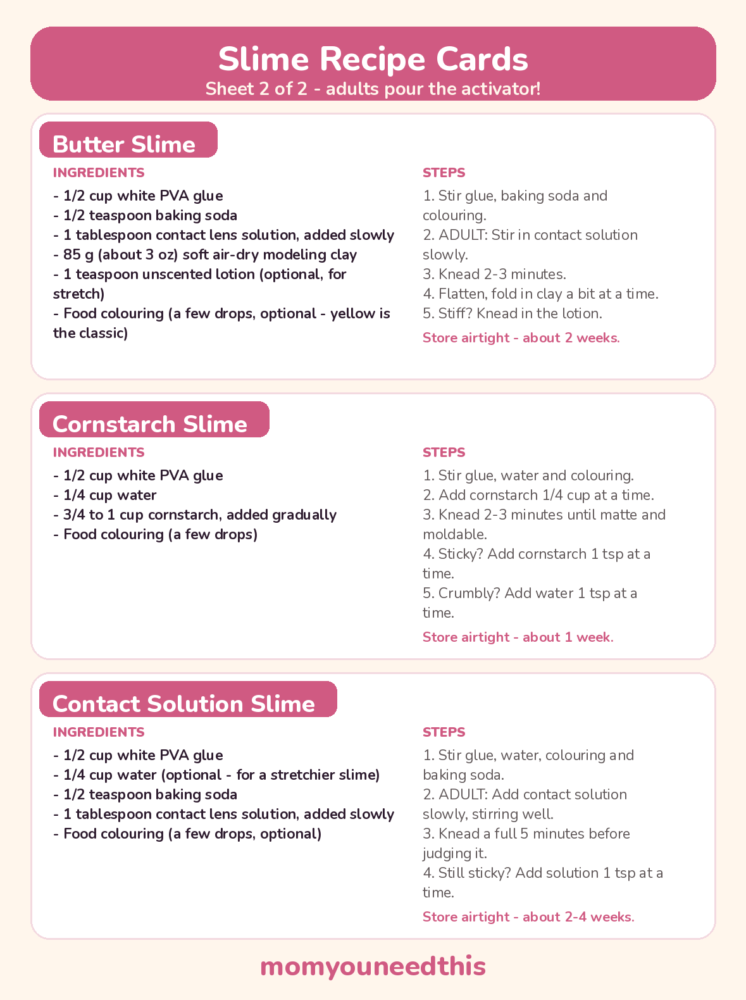

Playdough and Slime Recipes Borax-Free Homemade Doughs and Slimes Kids Can Squish All Week
Five homemade recipes made without borax powder: two soft playdoughs, including a no-cook batch and one without cream of tartar, plus butter, cornstarch and contact solution slimes. Every recipe gives exact quantities, adult steps, storage times and fixes — and two printable recipe card sheets to keep.
Last updated: October 25, 2026
Quick Answer
You can make soft playdough and stretchy slime at home without borax powder. Start with the no cook playdough recipe if you want the fastest batch, or the contact solution slime for classic stretch. Each recipe below lists exact quantities, storage times, and what to do when a batch turns sticky.
At a Glance
- Recipes: 5 — 2 playdoughs + 3 slimes, plus scented and gluten-free variations
- Printables: 2 recipe card sheets (all 5 recipes)
- Ages: Playdough from 18 months with supervision; slime for ages 3+ who are past the mouthing stage
- Time: About 5–10 minutes per batch
- Borax: No borax powder in any recipe — read the honest note below
- Cost: Free recipes — pantry and craft-cupboard basics
🛡️ Before You Mix — Borax-Free, Explained Honestly
Parents who look for a recipe slime without borax powder usually want to skip handling borax itself — and every recipe on this page does that. No recipe here uses borax powder. Read this section once before your first batch; the rest of the page assumes it.
- The contact solution point, plainly. Contact lens solution works as a slime activator because it contains a small amount of borate (boric acid / sodium borate). That is not the same as measuring out borax powder, but it is not “borate-free” either, and this page will not pretend otherwise. An adult pours the activator, every time.
- Dough and slime are not food. Supervise play, and keep both away from children under 3 and any child who still mouths things — slime especially. Playdough smells like baking; it is still a play material, not a snack.
- Hands and skin. Wash hands after playing. Keep slime off broken or eczema-prone skin, and stop and wash it off if it stings — some children are sensitive to activators.
- Adult steps are marked. Boiling or hot water and the activator pour are adults-only in every recipe below. Children join in for stirring once a mixture has cooled, and for all the kneading and playing.
- Raw flour note. Flour is a raw ingredient, even in a no-cook dough. Hands get washed after play and the dough is for playing, not eating. If you prefer, heat-treat the flour first: spread it on a baking tray and bake at 350°F (175°C) for 5 minutes, let it cool completely, then use it (adult step).
- Keep playdough away from pets. Playdough contains a lot of salt, and salt is dangerous for dogs if they eat a batch. Store dough sealed and out of reach, and sweep up dropped pieces.
🥣 No Cook Playdough Recipe — the Homemade Batch to Start With
If you searched “homemade playdough recipe no-cook,” this is that batch — mixed in one bowl, with no pan on the stove. It doubles as a simple playdough recipe for a first attempt: the dough comes together in about five minutes and kneads smooth and soft.
Ingredients:
- 2 cups plain flour
- 1/2 cup salt
- 2 tablespoons cream of tartar
- 2 tablespoons vegetable oil
- 1 to 1 1/2 cups boiling water (adults only)
- Food colouring (a few drops)
Steps:
- Mix the dry ingredients. Stir the flour, salt and cream of tartar together in a large bowl.
- ADULT ONLY — add the hot water. Stir the oil and food colouring into 1 cup of the boiling water, pour it in, and stir hard until a shaggy dough forms.
- Cool, then knead. Leave the dough for a few minutes until it is cool enough to handle, then tip it onto a floured surface and knead for 3–4 minutes until smooth. Children can take over the kneading once it has cooled.
- Adjust. If the dough feels dry, knead in the remaining hot water a spoonful at a time (adult pours). Aim for soft and pliable, not wet.
Storage: Sealed in an airtight container or zip bag at room temperature, this batch keeps for weeks — often a couple of months. Throw it away if it smells sour or shows mould.
Troubleshooting: Sticky → knead in more flour, a tablespoon at a time. Dry or crumbly → knead in warm water a few drops at a time.
🍋 Easy Playdough Recipe Without Cream of Tartar
This easy playdough recipe without cream of tartar swaps the tartar for lemon juice — the acid does a similar job of keeping the dough soft. White vinegar works in its place; choose one and use the amount listed.
Ingredients:
- 2 cups plain flour
- 1/2 cup salt
- 2 tablespoons lemon juice OR 2 tablespoons white vinegar (choose one)
- 2 tablespoons vegetable oil
- 1 cup warm water
- Food colouring (a few drops)
Steps:
- Mix the dry ingredients. Stir the flour and salt together in a large bowl.
- ADULT ONLY if the water is hot. Stir the lemon juice (or vinegar), oil and food colouring into the warm water.
- Pour and stir. Add the liquid to the bowl a little at a time, stirring until a dough forms.
- Knead. Tip onto a floured surface and knead for 3–4 minutes until smooth and soft.
Honest note on texture and keeping: This batch is soft and easy to shape, but a little less elastic than the cream-of-tartar dough, and it does not last quite as long.
Storage: Airtight at room temperature for about 2–4 weeks. Throw it away if it smells sour or shows mould.
Troubleshooting: Sticky → knead in more flour, a tablespoon at a time. Dry or crumbly → knead in warm water a few drops at a time.
🎄 Playdough Variations — Scented and Gluten-Free
Gingerbread playdough recipe: Make the no-cook dough above, skip the food colouring, and stir 1 tablespoon ground ginger and 2 teaspoons ground cinnamon into the dry ingredients before the water goes in. The dough comes out warm brown and smells like baking — remind little bakers it is still not food.
Gluten free playdough recipe: Make the no-cook dough with rice flour instead of plain flour — swap it cup for cup (2 cups rice flour, same salt, cream of tartar, oil and water). The texture is a touch grainier and it benefits from an extra minute of kneading. If your child has coeliac disease, also check that your other ingredients are certified gluten-free, and remember this dough is still for playing, not eating.
🧈 Butter Slime — Soft, Spreadable and Stretchy
A butter slime recipe works because of one extra ingredient: soft clay, folded into a basic slime until it turns smooth, matte and spreadable like butter. Without the clay, you have plain slime — the clay is the key ingredient, not an optional extra.
Ingredients:
- 1/2 cup white PVA glue
- 1/2 teaspoon baking soda
- 1 tablespoon contact lens solution, added slowly
- 85 g (about 3 oz) soft air-dry modeling clay
- 1 teaspoon unscented lotion (optional, for stretch)
- Food colouring (a few drops, optional — yellow is the classic)
Steps:
- Stir the base. Mix the glue, baking soda and food colouring in a bowl until the baking soda has dissolved.
- ADULT ONLY — add the activator slowly. An adult stirs in the contact lens solution and keeps stirring until the slime pulls away from the sides of the bowl.
- Knead the slime. Knead for 2–3 minutes. It feels sticky at first and firms up as you knead — do not add more activator yet.
- Fold in the clay. Flatten the slime, lay the clay on top, and fold and knead it in a bit at a time until the colour is even and the texture is smooth and spreadable.
- Soften if needed. Knead in the lotion, a little at a time, if the finished slime feels stiff.
Storage: Airtight container, about 2 weeks with clean hands. Throw it away if it smells off or gets dirty.
Troubleshooting: Sticky → knead for another 2 minutes first; only then add contact lens solution 1 teaspoon at a time (adult). Stiff → knead in lotion and warm it in your hands.
🌽 Cornstarch Slime — Thick, Matte and Moldable
This cornstarch slime recipe makes a thicker, matte slime that holds shapes, cuts with a play knife and tears with a soft snap — quite different from the stretchy glue slimes, and a favourite with children who like to mold more than pull.
Ingredients:
- 1/2 cup white PVA glue
- 1/4 cup water
- 3/4 to 1 cup cornstarch, added gradually
- Food colouring (a few drops)
Steps:
- Mix the glue base. Stir the glue, water and food colouring together in a bowl.
- Add cornstarch gradually. Stir in the cornstarch 1/4 cup at a time. It thickens suddenly — switch to your hands for the last addition.
- Knead. Knead for 2–3 minutes until it holds together, feels matte and molds without cracking.
Not oobleck: Oobleck is a different, runnier play material made from cornstarch and water only — it pours like a liquid and feels solid when you squeeze it. This recipe uses glue, which is what makes it a moldable slime instead.
Storage: Airtight container, about 1 week. It dries out faster than the other slimes — revive it once with a teaspoon of water, then replace it.
Troubleshooting: Sticky → knead in cornstarch, 1 teaspoon at a time. Crumbly or cracking → knead in water, 1 teaspoon at a time.
✨ Contact Solution Slime — the Classic Stretchy Batch
This is the contact lens solution slime recipe most starter kits are based on: glue, baking soda, and contact solution stirred in slowly. The one rule that decides whether it works is in step 2 — activator goes in gradually, never all at once.
Ingredients:
- 1/2 cup white PVA glue
- 1/4 cup water (optional — for a stretchier slime)
- 1/2 teaspoon baking soda
- 1 tablespoon contact lens solution, added slowly
- Food colouring (a few drops, optional)
Steps:
- Stir the base. Mix the glue, water (if using), food colouring and baking soda in a bowl until the baking soda has dissolved.
- ADULT ONLY — add the activator slowly. An adult stirs in the contact lens solution a little at a time, stirring well between additions, until the slime pulls away from the sides of the bowl.
- Knead before you judge it. Knead for a full 5 minutes. New slime almost always feels sticky at first and turns smooth with kneading.
- Adjust only if needed. If it is still sticky after 5 minutes of kneading, an adult adds more contact lens solution, 1 teaspoon at a time. Too much activator makes slime rubbery, so stop as soon as it holds together.
Storage: Airtight container, about 2–4 weeks with clean hands. Throw it away if it smells off or gets dirty.
Troubleshooting: Sticky → knead longer before adding anything. Rubbery → you added activator too fast; start the next batch with less and add it slowly.
🫧 More Slimes to Try Next
- Shaving cream slime recipe: Make the contact solution batch above, but whip 2 cups foam shaving cream (foam, not gel) into the glue before the activator goes in — the result is a light, fluffy slime. It may need an extra teaspoon of contact lens solution (adult adds).
- Clear glitter slime: Swap the white glue for clear PVA glue in the contact solution batch and stir in fine glitter with the colouring. Same amounts, same slow activator rule.
- Oobleck play (not a slime): Stir 1 cup cornstarch with 1/2 cup water, adding the water slowly. It pours, then feels solid when squeezed — a wonderful messy tray, and a different material from the cornstarch slime above.
✂️ The Printable Recipe Cards
All five recipes are also fridge cards. Sheet 1 holds the two playdoughs; sheet 2 holds the three slimes. Print them, keep them in a kitchen drawer, and the quantities are in front of you next time — no phone balanced on the flour bag.

✂️ Download Your Free Playdough Recipe Cards
2 playdough recipes on fridge cards — sheet 1 of 2.
⬇️ Download Free Recipe Cards 🖨️ Print🎁 Free printable for parents, grandparents and teachers

✂️ Download Your Free Slime Recipe Cards
3 slime recipes on fridge cards — sheet 2 of 2.
⬇️ Download Free Recipe Cards 🖨️ Print🎁 Free printable for parents, grandparents and teachers
🧽 How to Use These Recipes — the Set-Up and Clean-Up Routine
- Set up before you measure. Put a tray or washable mat under the bowl, tie hair back, and push sleeves up. Dough and slime stay on the tray — say it once, kindly, every time.
- Adults do the marked steps. Boiling water, hot mixtures and every activator pour are adult jobs. Have the measured activator ready in a small cup so there is no mid-recipe searching.
- Kids stir, knead and play. Once a dough has cooled, children can knead, roll, cut and build. Slime needs its full kneading time before anyone decides it has failed.
- Store it straight away. As soon as play ends, seal each batch in its own airtight container or zip bag and label it with what it is and the date you made it.
- Clean up in the right order. Scrape dough and slime scraps into the trash — never down the sink, where slime can clog a drain. Wash hands and tools in warm soapy water, and pick up dropped dough pieces so pets cannot reach them.
🧭 More Play & Learning Ideas
🧺 Sensory Bins
Seasonal and theme bin ideas that use the same scooping, pouring and squishing skills. Explore sensory bins.
📚 Learning Activities
The full hub of free printable activities for toddlers and preschoolers. Browse activities.
🎨 Free Coloring Pages
Hundreds of free coloring sheets to print for every age. See the coloring pages.
❓ Playdough and Slime Recipes FAQ
How long does homemade playdough keep?
The cream-of-tartar batch keeps for weeks in an airtight container at room temperature — often a couple of months. The no-tartar batch keeps about 2–4 weeks. Throw any batch away if it smells sour, feels slimy, or shows mould, and always store it sealed so it does not dry out.
Can I make playdough without cream of tartar?
Yes. Use the easy playdough recipe without cream of tartar on this page: lemon juice or white vinegar stands in for the tartar. The dough is soft and easy to shape, but a little less elastic, and it keeps for a few weeks instead of a few months.
Why is my slime sticky?
Usually because it has not been kneaded long enough, or the activator went in too fast. Knead for a full 5 minutes first — most sticky slime turns smooth. If it is still sticky, an adult adds contact lens solution 1 teaspoon at a time. Adding a lot at once overshoots and makes slime stiff and rubbery.
Is contact solution slime safe for kids?
It is a widely used homemade slime when an adult handles the activator and children wash their hands after playing. Contact lens solution contains a small amount of borate, so be honest with yourself about that: keep it off broken or eczema-prone skin, stop if it stings, and do not give slime to children under 3 or any child who still mouths things.
What makes butter slime different from regular slime?
The clay. Folding soft air-dry modeling clay into a basic slime makes it matte, smooth and spreadable, like soft butter. Without the clay it is just regular slime with a yellow colour — the clay is what changes the texture.
Can my dog eat playdough?
No — keep playdough away from dogs and other pets. Playdough contains a lot of salt, and eating a batch can make a dog seriously ill. Store it sealed and out of reach, pick up dropped pieces, and call your vet promptly if your dog does eat some.